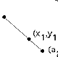
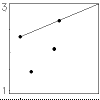

|  | Definition Movement, in random order, toward a collection of points can fill in a polygon, or grow a fractal. |
|  | Example A concrete example illustrating how the chaos game works. |
 |
Problems Test your intuition before looking at the answers, or running the simulation. |